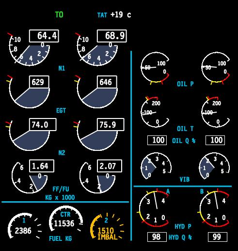
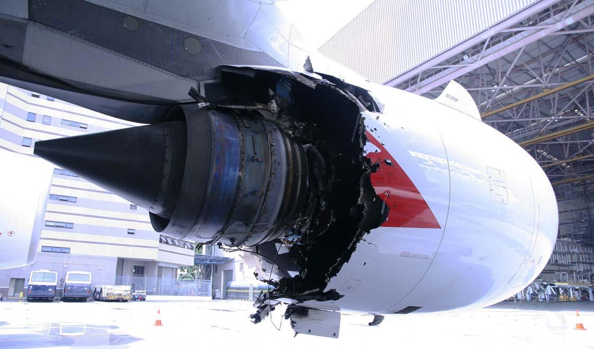
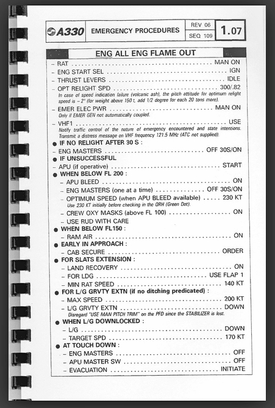
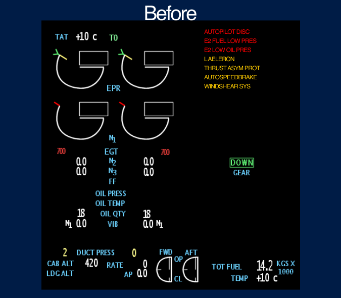
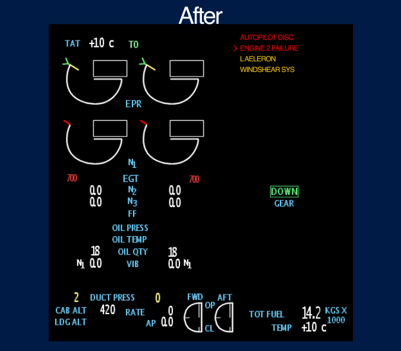

Case Study
NASA Ames Research Center
Designing Boeing 777 flight simulator interfaces to help pilots make faster decisions during in-flight emergencies.
Case Study
Designing Boeing 777 flight simulator interfaces to help pilots make faster decisions during in-flight emergencies.
At NASA Ames Research Center, I worked on the Boeing 777 flight simulator program — redesigning the EICAS (Engine Indication and Crew Alerting System) interface to help pilots process critical failure information faster during emergencies.
The core insight was simple but powerful: instead of showing pilots everything, show them only what’s wrong. This reductive approach to cockpit display design reduced incident analysis time by 35% and informed FAA safety recommendations.
Modern cockpits are marvels of engineering — but they present a critical design challenge. The EICAS display on a Boeing 777 shows engine parameters, hydraulic systems, electrical status, fuel quantities, and dozens of other indicators simultaneously.
During normal flight, this comprehensive view works fine. But during an emergency — when an engine fails, a fire warning triggers, or multiple systems cascade — pilots are suddenly drowning in information at the exact moment they need clarity most.
The question we set out to answer: how do you redesign a cockpit display so that it helps pilots focus on what matters during the moments that matter most?

Standard EICAS display — engine parameters, alerts, and system statuses all visible at once
We conducted extensive research with over 20 commercial airline pilots, studying how they process information during simulated in-flight failures. We observed their scan patterns, decision-making timelines, and the moments where critical information was missed or delayed.
One of our most instructive case studies was Qantas Flight 32 — an Airbus A380 that suffered an uncontained engine failure over Indonesia in 2010. The crew was bombarded with over 50 ECAM messages in rapid succession, many of them contradictory. Despite the chaos, the crew’s methodical approach to triaging information saved 469 lives.
During multi-system failures, pilots received 30–50+ alerts simultaneously. After the first 8–10, most were dismissed or ignored entirely.
Pilots spent an average of 12 seconds scanning for relevant information before acting — time that could mean the difference between containment and escalation.
Pilots described “tunnel vision” during emergencies — fixating on one indicator while missing changes in others. The display design was working against human cognition.


Left: Qantas Flight 32 engine damage — Right: Quick Reference Handbook (QRH) used for emergency checklists
The fundamental problem was that the EICAS display treated all information with equal visual weight. Normal operating parameters, advisory messages, caution alerts, and critical warnings all competed for the same screen real estate and pilot attention.
Pilots told us they had developed personal coping strategies — mentally filtering out certain display areas, relying on memory instead of the display, or simply dismissing alerts in bulk to clear the screen. These workarounds were unreliable and dangerous.
Our design philosophy was counterintuitive for a system that had always tried to show everything: show less. Specifically, during failure scenarios, suppress all normal operating parameters and surface only the deviations — the failures, the warnings, the things that need immediate pilot action.
“If everything is highlighted, nothing is highlighted. The most powerful thing a display can do during an emergency is hide what’s working.”
Design principle — EICAS redesign
We studied the Quick Reference Handbook (QRH) — the paper-based emergency procedures that pilots reference during failures — and used its structure as a design model. The QRH doesn’t list everything about the aircraft; it lists only the relevant steps for the specific failure at hand. Our display should do the same.
.jpg)
Quick Reference Handbook pages — the paper-based mental model that guided our digital display redesign
From showing everything to surfacing only what matters.


Left: Original EICAS showing all UI aspects — Right: Redesigned display focused on failures only, reducing clutter for faster pilot decisions
The final interface strips away operating norms during failure scenarios and presents only the information pilots need to act. The display dynamically transitions between a full-system overview during normal flight and a failure-focused view when anomalies are detected.
Pilots no longer need to mentally filter out noise — the system does it for them. The result is a display that works with human cognition under stress rather than against it.
Redesigned EICAS interface — combined engine display and aircraft systems diagram for integrated failure analysis

Boeing 777 flight simulator environment — where the redesigned EICAS was tested with commercial pilots
Measurable improvements in pilot decision-making under pressure.
By suppressing normal parameters, pilots identified the root failure 35% faster. The display did the cognitive filtering that pilots previously did manually.
Pilots stopped bulk-dismissing alerts because only relevant alerts were shown. Every visible item warranted attention, rebuilding trust in the display system.
Research findings from pilot testing were compiled into recommendations that informed FAA safety guidelines for cockpit display design standards.
What nearly three years at NASA taught me about designing for extreme environments.
Interfaces used in emergencies must work with stressed cognition, not against it. Every element that doesn’t serve the immediate task is a liability. This changed how I think about information hierarchy in every product I’ve designed since.
The most impactful design decision wasn’t adding a new feature — it was removing information. Showing less, at the right time, gave pilots more clarity than any new widget or visualization could have.
Aviation design operates under strict regulatory, safety, and certification constraints. Learning to innovate within rigid boundaries — and to build trust with domain experts who are rightfully skeptical of change — was one of the most valuable skills I developed.